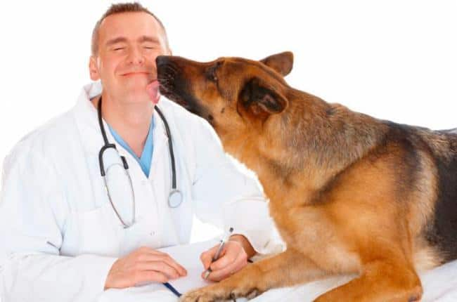

Кто мы такие ?

Мы любим животных так же, как и Вы!
Мы искренне желаем им здоровья и долголетия, а значит,
предоставим максимально правильное и компетентное лечение. У нас
квалифицированные врачи (мы собрали одну из лучших команд в Киеве) и адекватные цены.
Если вам требуется вакцинация питомца, то наша ветеринарная
клиника на Троещине (10 мин. езды) бесплатно проводит вакцинацию
против бешенства Рабистар а также профилактический клинический
осмотр животного на первичной и ежегодной вакцинации
(оплачиваются только материалы).
Стресс для животных очень опасен, поэтому мы создали для ваших
любимцев максимально комфортные условия пребывания в нашей
клинике.
Принцип нашей работы заключается в том, что:
безопасность животного превыше всего
качественное обслуживание
комфорт для владельцев
ваш питомец - наш любимец
наши цены не "кусаются"
Круглосуточная ветеринарная помощь
Вы всегда можете обратиться к нашим специалистам за консультацией
по уходу, лечению, вакцинации, стилю или питанию животного.
Мы не государственная ветеринарная клиника Киева, поэтому у нас
нет очередей, мы работаем круглосуточно 24/7, а сервис и
качество обследования, лечения и реабилитации в разы лучше!